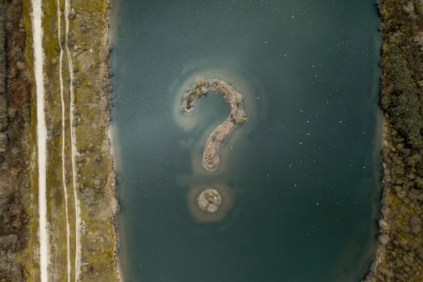
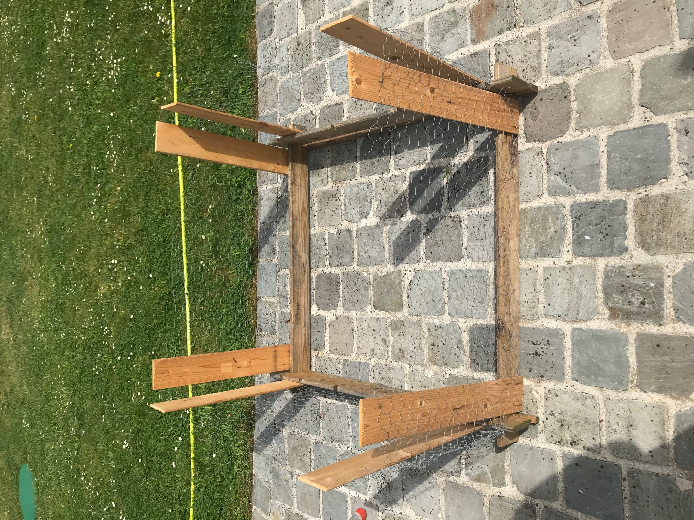
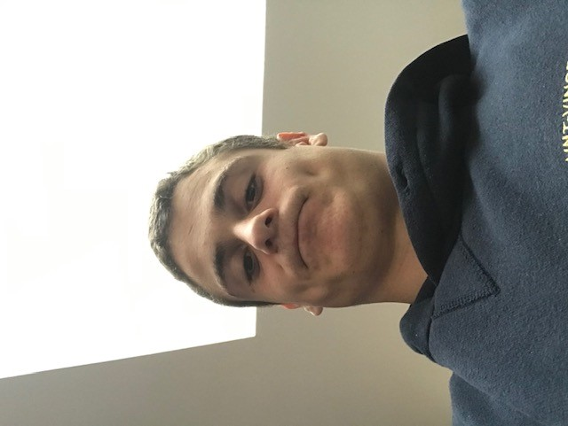

Ma démarche créative pour ce projet
Au début j'ai longtemps cherché ce que je devais faire, j'avais l'impression de n'avoir aucune idée et d'être dans le flou total.
Après la période de questionnement est venue la période de recherche du support adapté. J'ai cherché le support où j'étais le plus à l'aise.

La créativité en atelier
Voici trois formes de créativité que j'ai appréciée parmi tant d'autres :
La première est collective puisque c'est le mood board du Monopo'Lille, cela nous a permis de mélanger nos créativités pour en fomer un projet plaisant.

La seconde était plus manuelle et laisser libre cours à notre imagination. Elle a aussi donné naissance à L'aspirale des mers, ce bateau révolutionnaire qui...vous verrez lors du Pecha Kucha.

La dernière forme est celle que nous avons abordé pendant le premier cours de créativité. Voici la carte que j'avais pioché et qui me représentait.

Mes sources d'inspiration
Elles viennent souvent de ma famille et de là où j'habite.
La première créatrice de là maison c'est ma maman, elle peint, bricole et coud comme personne, en témoigne ces masques haute couture.

La deuxième inspiration c'est ma soeur, elle passe ses journées à bricoler, coller, couper et construire un univers pour s'amuser.

Ma créativité hors ateliers
Confinement oblige, la créativité est un bon remède contre l'ennuie, en voici deux exemples :
Je vous présente l'enclos du hamster de ma soeur, réalisé en duo avec mon frère. Il inspire pas confiance mais il est très efficace pour l'empêcher de s'enfuir tout en profitant du beau temps.
Celle-ci est ma première tentative de projet individuel avant d'avoir vu les consignes, autant le mettre sur ce support plutôt que d'oublier ce magnifique patchwork.

Feed back et conclusion
Ce cours de créativité m'a permis de dévolopper ma capacité à innover, de ne pas juger une performance et plein d'autres choses.
Ma citation de la créativité : une bonne équipe est une équipe avec un numéro 10 créatif.

Avant la créativité
Après la créativité